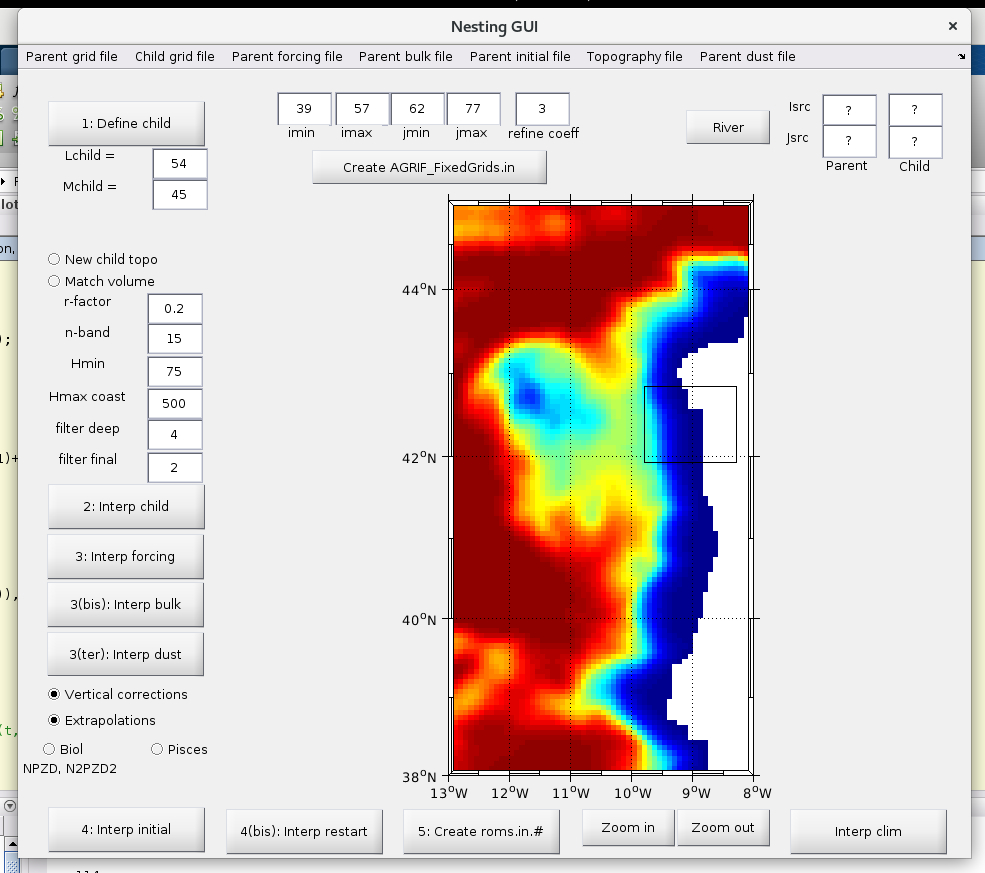

ROMS_AGRIF Installation Ubuntu 17.04
Installation of Roms_tools
Download ROMS_AGRIF
Uncompress tar
tar -zxvf Roms_Agrif_v3.1.1_07_07_2014.tar.gz
this will create a folder named Roms_tools. Download ROMSTOOLS
and uncompress these tools into the Roms_tools folder:
tar -zxvf ROMSTOOLS_v3.1.1_07_07_2014.tar.gz
Download the toolboxes and softwares nedded by ROMSTOOLS
and uncompress them:
tar -zxvf Utilities_ROMSTOOLS_v3.0_21_12_2012.tar.gz
Copy and renamed Run folder:
cd Roms_tools
cp Run Run_whatever
Install required netcdf libraries:
sudo apt install netcdf-bin libnetcdf-dev libnetcdff-dev
Creation of required initial files
You will need download the needed datasets to create the required initial conditions. These datasets ar in the CROCO Datasets website http://www.croco-ocean.org/download/datasets/
Grid creation
Open Matlab and add Run_whatever folder:
>> cd Run_whatever
>> start
execute make_grid to create netcdf with grid. To do this, we'll need the etopo2.nc file.
Once you get the etopo2.nc put this in the path:
Roms_tools/Topo/etopo2.nc
and then:
>> make_grid
If this error appears Undefined function or variable 'bitmax'. open in Matlab the m_grid.m file and replace every bitmax by flintmax
Surface boundary initial conditions
To make the forcing conditions, first we must get the needed netcdf files.
extract file into the Roms_tools and execute:
>> make_forcing
Temperature and Salinity initial conditions
First, download the needed datasets. In this case get the CARS2009 dataset
or
extract into the Roms_tools and then execute:
>> make_ini
We can execute the make_ini using CARS2009 or WOA2009. We can change the climate files modifying the romstools_param.h: %climato_dir=cars2009_dir; climato_dir=woa_dir; % Select this to use the WOAPISCES
Temperature and salinity boundary and initial condition
To execute this, only:
>> make_clim
Compilation of model and running
After the execution of the last 4 steps, we'll have 4 netcdf files into the ROMS_FILES folder:
- roms_clm.nc
- roms_frc.nc
- roms_grd.nc
- roms_ini.nc
and other intermediate files not needed to get the model.
Compilation in local (ONLY Linux)
Modify jobcomp file in the Run_whatever folder to use lnetcdff, adding:
...
# If needed set your own NETCDF directories
#
NETCDFLIB="-L../../netcdf_x86_64 -lnetcdff"
...
and execute:
./jobcomp
after the compilation finish, then execute the model:
./roms roms.in
Compilation in "Carlos Cloud"
Connecting from Windows
We'll needed:
- Putty
- WinSCP
With WinSCP we can copy the nc files from our Run_whatever/ROMS_FILES folder to our rfirst/ROMS_FILES
or whatever in the computer of Carlos (CC). Then we must copy our configuration files too:
params.h
cppdefs.h
in the rfirst folder
Then we must use Putty to connect us to the CC and launch the compilation of the model. To do this:
jobcomp
and after this finish
roms roms.in
If we want launch the model and get out from the console, we can execute:
nohup roms roms.in > roms.out & 2>&1 &
this launch a process and return us a PID, or the number of the process. We can show the process running with:
ps
Once the model is created, then you must download the nc files to your computer. To do this, you can use
WinSCP.
To get CC credentials, contact with Carlos
Configuring the model
After we execute make_grid we'll obtain the LLm and MMm parameters that we must copy
in the params.h file.
- theta_s: more layers close to the surface
- theta_b: more layers close to the bottom
- hc: the minimmun depth of the model
To run zlevs:
depth=zlevs(100, 0, 5, 0, 10, 30, 'r', 2)
r is the point in the Arakawa cell. It could be r, the center of the cell or w the top of the cell
vtransform allow define the way the layer grow from coast to offshore. There are only two values 1 or 2
Nesting grids
To nest a smallest grid into our model in Matlab,
>> nestgui

select the parent grid, in our case roms_grd.nc into de ROMS_FILES folder. Click in the
Define child button and select with the mouse the child grid area into the window opened.
With New child topo we could select a new high resolution topography to the child.
Match volume allow match the volume between child and mom. Only in cases that mom knows
the child topo.
r-factor indicates the depth relation between cells. Shoudn't be bigger than 20%.
n-band in the boundary between mom and child the values must be identical. This value
allow set how many cells are the boundary between them.
Hmin set the minimmun depth to simplify the model. Only in cases where the bathimetry has
depths under this minimmun depth.
After we set the whole params, we have to get the
refine coeff set the refinement between mom and child grid. In the 99% cases this value
will be 3 for numeric stability. Is good that a mom cell is equal to a child cell.
We generate the roms.in from the gui and we can modify values into this file.
Clicking into the Create AGRIF_FixedGrids.in generates the values from the UI to a file
into the root folder.
Once all these files are created we can run the model:
- Open
cppdefs.handdefinetheAGRIFandAGRIF_2WAYvariables - run
jobcomp - and then
roms roms.in